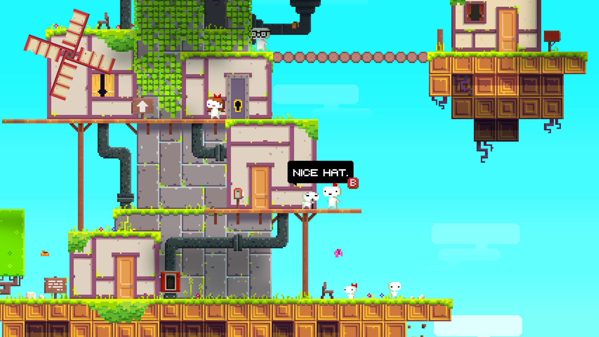

Lake on rauhallinen seikkailupeli, jonka on kehittänyt Gamious. Peli sijoittuu vuoteen 1986 ja
kertoo tarinan Meredith Weissistä, joka palaa kiireisestä ohjelmoijatyöstään kotikaupunkiinsa Providence Oaksiin
Oregonissa. Hän ottaa kahden viikon tauon töistään ja ryhtyy sijaiseksi postinkantajaksi isänsä puolesta. Pelaaja
seuraa Meredithin elämää tämän lomajakson aikana, jakaa postia, tapaa tuttuja ja uusia ihmisiä sekä tekee valintoja,
jotka vaikuttavat tarinan kulkuun.
Sable on seikkailupeli, jonka on kehittänyt Shedworks. Peli seuraa nuorta tyttöä nimeltä Sable, joka
lähtee yksin rituaalimatkalleen halki aavikkomaailman nimeltä Midden. Tämä matka, jota kutsutaan nimellä "Gliding",
on aikuistumisriitti, jonka aikana Sable etsii omaa paikkaansa yhteisössään. Pelaaja tutkii avointa maailmaa, kiipeilee
raunioissa, ratkoo kevyitä pulmia ja tutustuu erilaisiin kulttuureihin ja hahmoihin.

Fez on tasohyppelypeli, jonka on kehittänyt indie-studio Polytron Corporation. Peli
kertoo pienestä olennosta nimeltä Gomez, joka elää kaksiulotteisessa maailmassa. Hänen elämänsä muuttuu, kun hän saa
mystisen fez-hatun, joka paljastaa kolmannen ulottuvuuden. Pelaajan tehtävänä on auttaa Gomezia tutkimaan maailmaa,
ratkaisemaan pulmia ja keräämään kultaisia kuutioita palauttaakseen universumin tasapainon.